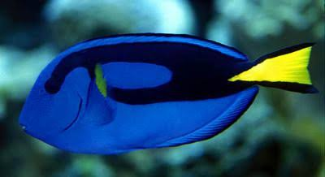
Kirurgfisk
En kirurgfisk lever i Indo-Stillehavet koraller, rev og klipper. Den kan findes i flere forskellige farver
Fun fact
Halen er skarp ligesom en kirurgisk kniv
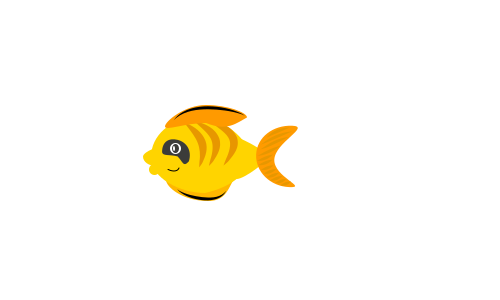
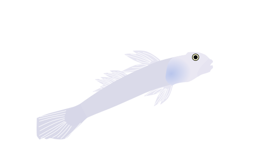
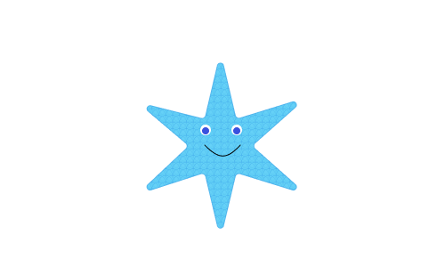

En kirurgfisk lever i Indo-Stillehavet koraller, rev og klipper. Den kan findes i flere forskellige farver
Halen er skarp ligesom en kirurgisk kniv